{kind=link}
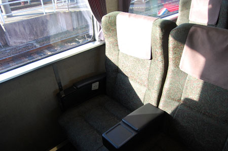
さて、2日目です。 昨日は、最後の鈍行でかなり疲労困憊だったのだけど、どうにか早朝起床！ 始発から飛ばしますヨ！ 2日目のテーマはVIP。 グリーン車で大分まで行き、ゆふいんの森号で博多。 んでもってメインイベントはリレーつばめのDXグリーンとゆー九州1周コースです。{kind=link}
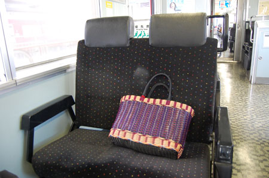
でも、途中でフツーの電車にも乗るよ{kind=link}
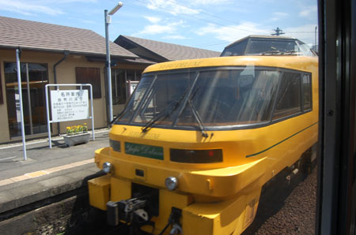
あ！ゆふDXだー！かっこいー！ なんか重機っぽいよね～いいなー{kind=link}
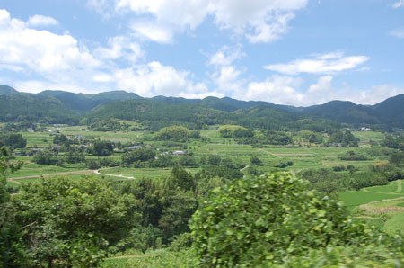
ここらへんの眺めはいいなぁー。{kind=link}
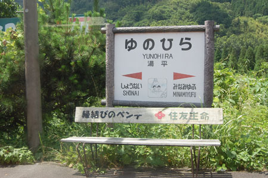
縁結びのベンイ？{kind=link}
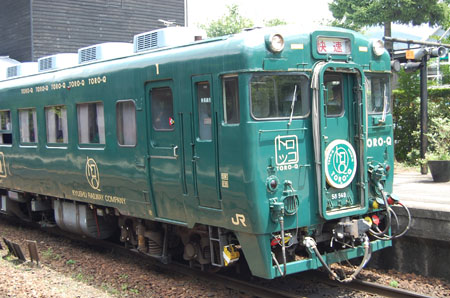
あっ！トロＱ！{kind=link}
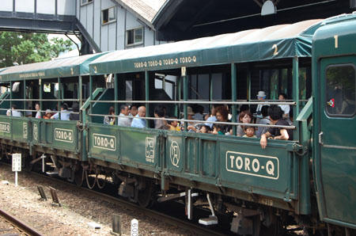
トロッコ列車！みんな暑くないのかなー。{kind=link}
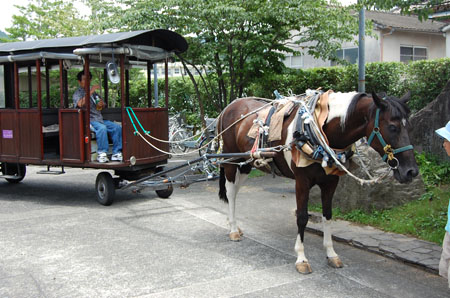
こっちは馬車！{kind=link}
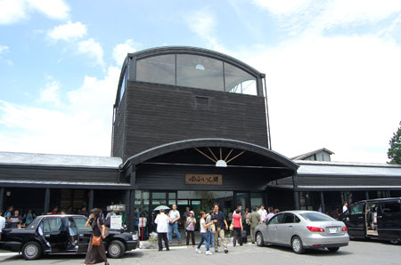
観光名所。ゆふいんです。 今回は駅しか行かないけど。{kind=link}
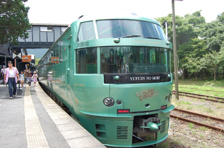
で、乗るのはこちら「ゆふいんの森」号 ちょっとこのヒトもいいよね～。{kind=link}
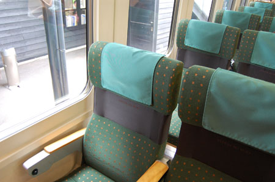
シートはこんな感じ。 さいきんの女子の流行ゴムベルトっぽい感じ。{kind=link}
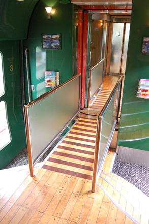
内装がすごい！この渡り廊下はなんなんだー{kind=link}
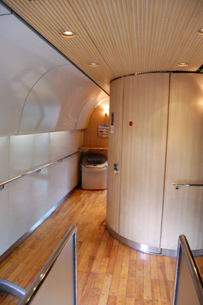
木の使い方がいいなー{kind=link}
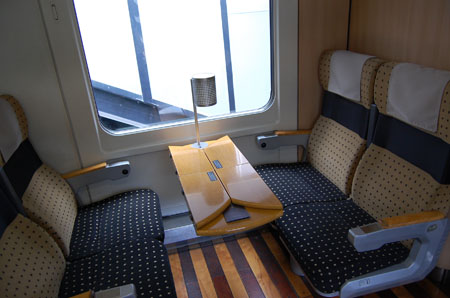
こちらはグループ席。 女のコたちがきゃあきゃあおしゃべりしながら過ごしてた。 テーブルは折りたたみ式で席の移動が便利{kind=link}
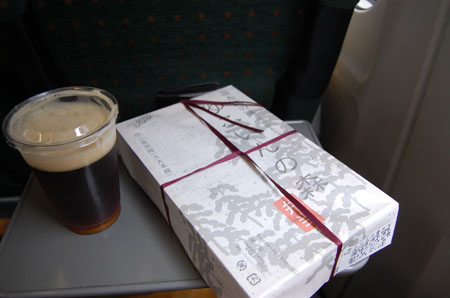
さてと。 生ビールとゆふいんの森弁当でも食べますカー。{kind=link}
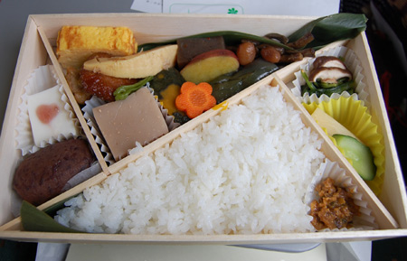
上品＆女性向きな構成だなー。 ガッツンとしたおかずはありません。昨日の「かれい川」もそうだけどそれが最近の駅弁スタイルなのかなー？ デザートはミルクかんと、おはぎ。{kind=link}
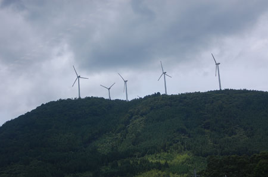
風力発電が山の上ぐるぐる 最近増えたねー。{kind=link}
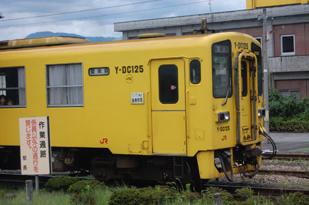
西武線っぽい。豊後森行き。 豊後森では機関庫を見たかったのだけど時間があわず。 車窓から見たけど、その廃墟っぷりは圧巻。機関庫だけでも今度見に行ってみたいなー。 （写真が無いのはすっかり油断をしていて撮り逃したからです…）{kind=link}
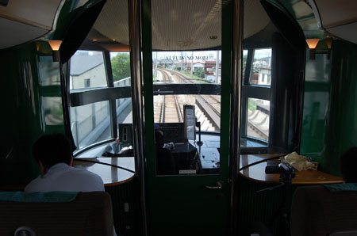
運転席からのふうけい。 むかし深夜にやっていたずーっと運転席からの風景を流している番組が好きだったなー。今もあるのかな？ありそうだけど。{kind=link}
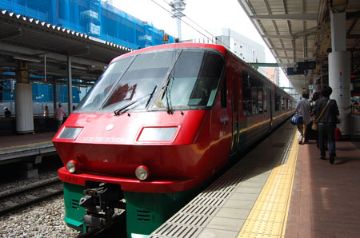
博多到着～。 ここはJR九州の車両がせいぞろい。 ハウステンボス号{kind=link}
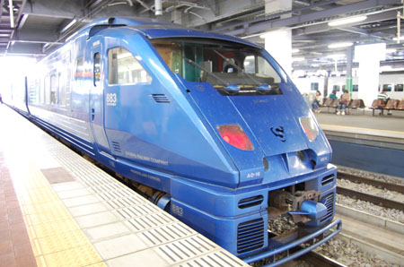
ソニック！{kind=link}
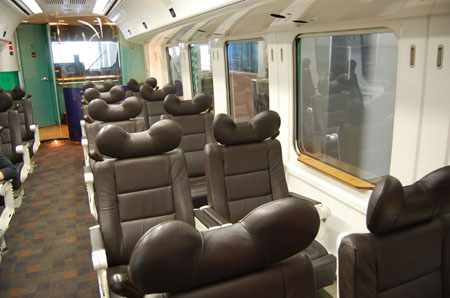
ソニックの中そのいち{kind=link}
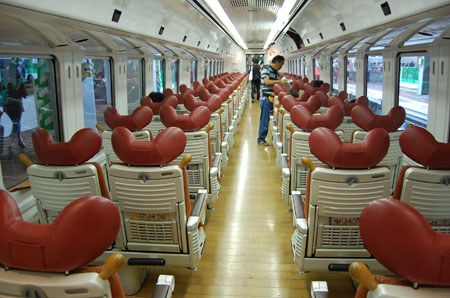
そのに{kind=link}
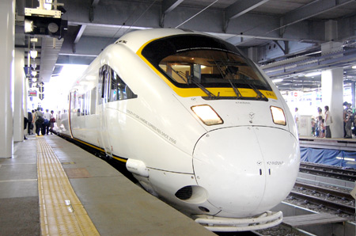
ワタシの大好きな「かもめ」 どれぐらい好きかとゆーと、この写真のかもめの先端部分が汚かったので（虫とかが付着していて汚れている）フォトショで消すぐらい好きです。{kind=link}
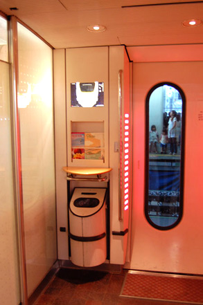
ちょっとエロ系な入り口もいいよねー。{kind=link}
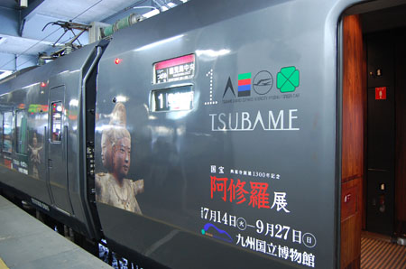
って、電車散策して楽しんで、乗るのはこちらリレーつばめDXグリーン。 阿修羅が似合うな…{kind=link}
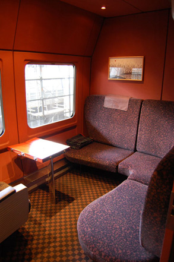
こちらはグループ用個室。{kind=link}
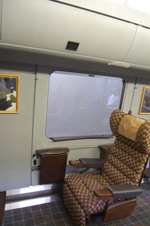
これがDXグリーン 3席しかありません！9席ぐらい入りそうなスペースに3席！{kind=link}
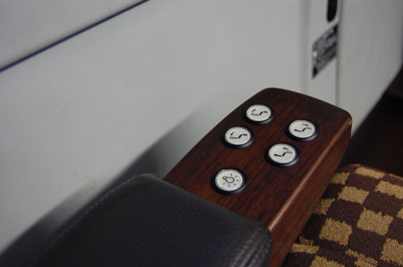
椅子は木製＆革（？）シートの模様はヴィトン系です。 飛行機のビジネスクラスっぽいリモコン付き。ほぼほぼフラットになります。 かなり感動。{kind=link}
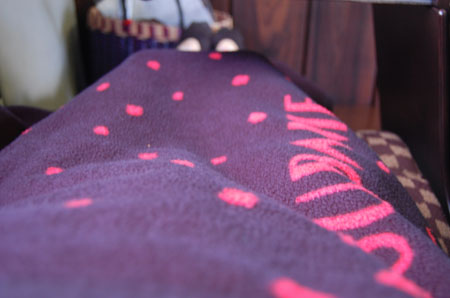
こんなかんじ。 毛布も貸してもらって、（ふかふか）寝たら勿体ないけど寝ないと勿体ないとゆー気持ちに襲われます。{kind=link}
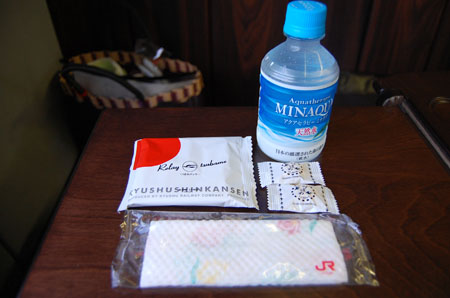
お水（ドリンク）とクッキーと飴が貰える。{kind=link}
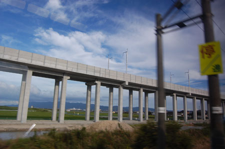
併走するかのよーに、建築中の新幹線線路。 もうじき九州新幹線も博多まで開通してリレー方式ではなくなるのね。{kind=link}
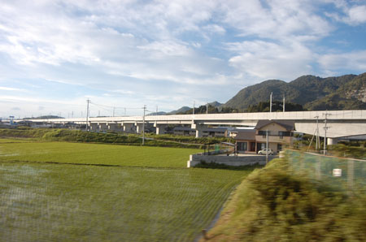
線路を造る、道を造るってスゴイなー。